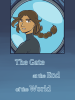

Short Stories
|
Yellow | May 2014
An experiment in writing in present tense. Horror. 1,789 words. Status: Can be read here |
Webcomics
|  |
The Gate at the End of the World | February 2017 - Present
Five people are sent to guard The Gate at the End of the World for a year. Status: Currently being posted on Smackjeeves and Tumblr |